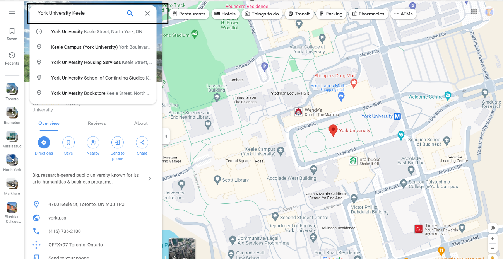

See these instructions for correct way to insert address in the form
- Go to google maps link here
- Search the address you want o insert in the form as your source address (example given below)

- Once it loads the page, look for the completed address on the screen and copy it

- Now, paste that address in your source input on the form. Make sure to repeat the same steps for destintion address as well.
- On hitting Go, you should see a google map with the source address, destination address and a route with accessible bus shelter to protect you from cold during snowstorms.
- Zoom in the map, and click on bus to see actual bus schedule times. You can do the same for all bus times you see one the routes